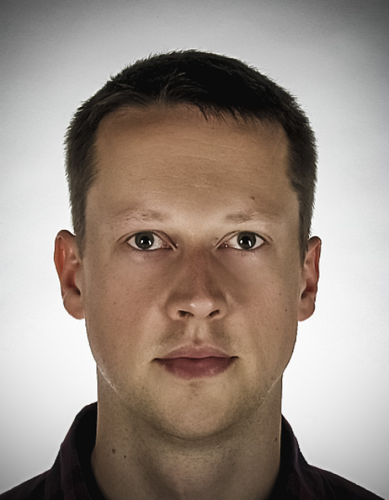

Bartomiej Jarosz
"mniej znaczy więcej"
25 luty 1989
+48 732 945 553
jarosz.bartomiej89@gmail.com
Doświadczenie
DE Bartomiej Jarosz
Operator kamery, montażysta, webdesigner
1 lipiec 2017
Produkcja filmów, filmowanie, montaż, Tworzenie projektów graficznych i animacji, Motion graphic, Tworzenie stron internetowych opartych o system CMS WordPress, SEO, Kampanie google AdWords, Facebook Ads
Skymaster Rafał Łukawski
Operator drona, operator kamery, montażysta
1 maj 2016 - 30 listopad 2016
Nagrywanie filmów dronem oraz lustrzanką cyfrową, Montaż filmowy, tworzenie prostych animacji, motion graphic,
BGM S. C. BOGDAN KARAŚ, MARCIN DZIADOWIEC
Prowadzenie sklepu internetowego
1 październik 2014 - 30 kwiecień 2016
Prowadzenie sklepu internetowego opartego o WooCommerce, Dodawanie i opis nowych produktów, Wykonywanie fotografii produktowej mebli, Obróbka zdjęć,
Wykształcenie
AKADEMIA GÓRNICZO – HUTNICZA IM. STANIASŁAWA STASZICA W KRAKOWIE
Geologia naftowa, studia magisterskie
1 marzec 2013 - 30 wrzesień 2014
ZESPÓŁ SZKÓŁ PGNIG IM. WALEREGO GOETLA W KRAKOWIE
Technik Wiertnik
1 wrzesień 2010 - 30 czerwiec 2012
AKADEMIA GÓRNICZO – HUTNICZA IM. STANIASŁAWA STASZICA W KRAKOWIE
Ochrona Środowiska, studia inżynierskie
1 październik 2008 - 31 styczeń 2013
Umiejętności
webdesign
CSS3, HTML5, WordPress, JavaScript, jQuery, Adobe XD,
Grafika
Photoshop, Ilustrator, CorelDRAW,
Prdukcja wideo i animacji
Premiere Pro, After Effects
Języki
Angielski, Niemiecki